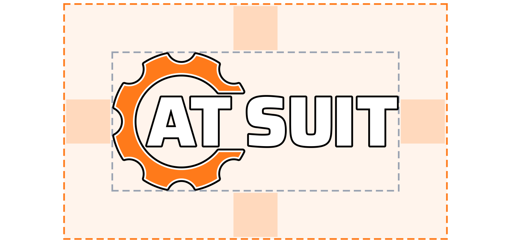

How to use the AT-SUIT logo, colours and app icons. AT-SUIT is the room-control software of the AT family: one app for every room: timers, chat, captions, presenters and screens.
The AT-SUIT logo uses the same build as every AT brand: an orange gear shaped like a C, the letters AT inside it, and the product name, SUIT, to the right. Every part has a thick black outline.
Every AT company uses the same gear and letters. Only the colour of the gear changes. AT-SUIT is orange, a colour no other member uses, so it is easy to tell apart when it appears next to its siblings.
AT-SUIT is a product brand. It is the software that AT GROUP and AT EVENTS crews use to run rooms at events. It is not a separate company. On materials that show several brands, put AT GROUP first, at the top or on the left, and give the other brands equal size below it or to the right.
When AT-SUIT appears next to AT EVENTS (for example, on a crew screen), keep both logos the same height and leave at least two A-heights between them.
Orange is the AT-SUIT colour. Navy and App Dark are the backgrounds. Black and white are only for the logo outline and letters. The values are also in colours.json.
The unit of measure is x, the height of the "A" in the logo. Keep at least 1x of empty space on every side of the logo. Text, edges, photos and other logos all stay outside this space.

x = the cap height of the A. For the icon on its own, use the A in the icon. In the wordmark, x is about one third of the gear's height.
| Version | Screen | |
|---|---|---|
| Wordmark | 180 px wide | 40 mm wide |
| Stacked | 120 px wide | 25 mm wide |
| Icon (full detail) | 48 px | 12 mm |
| Small app icon | 16–40 px | not for print |
| One-colour icon | 24 px | 8 mm |
Below 48 px, the white band and thin outlines blur together. At those sizes use the simplified small icon (app/favicon.svg, app/tray-16.png, tray-32.png). It has a heavier outline, no white band and a larger AT.
Use the full-colour logo wherever you can. Because of its black outline, the same file works on both light and dark backgrounds. Use the one-colour versions only when colour is not possible: engraving, stamps, single-colour vinyl, fax or watermarks.
In the one-colour versions, the gear and the letters are each one solid shape, separated by a small gap. These versions come in pure black or pure white only. Don't make them in orange or any other colour.
Navy is the logo's home. On plain dark or plain light backgrounds, place the full-colour logo directly. On photos, video, patterns or anything busy, put the logo on a navy plate (#0B1020, at least 90% opaque) with 1x of padding around it.
Mid-grey backgrounds are fine, because the black outline separates the logo from them. Never place the logo on an orange or warm-orange background, because the gear disappears into it. If the background has to be orange, use the white one-colour logo.
The app icon is the logo's icon version with no extra plate, so it shows on whatever background the system uses. Two sources cover every size: the full icon for 48 px and above, and the simplified small icon for 16–40 px.
icon.ico contains 16, 24, 32, 48, 64, 128 and 256 px. The 16, 24 and 32 px sizes use the simplified small icon.icon-192.png and icon-512.png.icon-512.png or icon-1024.png for the system tray and the .desktop file.<link rel="icon" href="/favicon.svg" type="image/svg+xml">, with /favicon.ico as a fallback and <link rel="apple-touch-icon" href="/apple-touch-icon.png">.The logo only works if every copy is the same. Always use the supplied files. Never redraw or edit the logo.
Every file is generated by branding/make_brand.py. To fix or update the logo, edit the script and run it again. Don't edit the exported files by hand.
| Use | File | Notes |
|---|---|---|
| Web page, app header | logo/atsuit-wordmark.svg, logo/atsuit-icon.svg | SVG scales to any size. Use the transparent versions on dark or light backgrounds. |
| Print (posters, signs, docs) | logo/*.svg (vector), or atsuit-wordmark.png (2000 px) | Use the SVG for print shops. They can convert it to PDF/EPS. Black/white one-colour files are for single-ink jobs. |
| Office documents / email | logo/atsuit-wordmark.png, atsuit-wordmark-on-light.png | PNG with a transparent background, or with a white plate if the program flattens transparency. |
| Presentations / video | logo/atsuit-wordmark-on-dark.png, atsuit-stacked-on-dark.png | Navy plate built in. |
| Windows app / installer | app/icon.ico | Contains 16–256 px. Small sizes use the simplified mark. |
| Browser tab | app/favicon.svg, app/favicon.ico | The SVG is the simplified mark. The .ico contains 16, 32 and 48 px. |
| iPhone / iPad home screen | app/apple-touch-icon.png (180) | Navy plate built in. |
| PWA / Android / Linux | app/icon-192.png, app/icon-512.png, app/icon.png (512), app/icon-1024.png | Transparent. |
| System tray | app/tray-16.png, app/tray-32.png | Simplified mark. |
| GitHub | social/github-social-preview.png (1280×640), social/readme-banner.png (1600×400) | Upload the preview under Settings → Social preview. Put the banner at the top of README.md. |
| Social media | social/github-social-preview.png, logo/atsuit-icon-on-dark.png | The icon on navy works as a profile picture. It crops cleanly to a circle. |
| Colours in code | colours.json | Hex and RGB, with where to use each colour. |
Lettering: Saira ExtraBold, © 2020 The Saira Project Authors, SIL Open Font License 1.1 (fonts/OFL.txt). The logo files contain outlines only. Embedding the font is not needed.